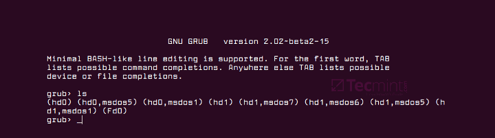

Заметки о работе с Linux
Оглавление
Работа с файловой системой
Монтирование дисков
Для того, чтобы примонтировать нужный диск из консоли, нужно выполнить 2 простых действия:
-
Посмотреть как ОС определила жесткий диск. Это можно сделать при помощи команды
sudo fdisk -l -
Теперь, увидев, какое имя присвоила ОС диску, его можно примонтировать к нужной дирректории
sudo mount -t ntfs /dev/sdb1 /mediaДанная команда примонтирует раздел диска c именем
sdb1и файловой системойntfsк папке/media.
Ответ нашел здесь
Настройка системы
Загрузка системы из оболочки GRUB
Для того, чтобы загрузить систему из оболочки GRUB необходимо:
-
Найти раздел на котором расположены файлы
vmlinuzилиlinux, иinitrd.img. Посмотреть список файлов можно при помощиls (hd0,1)/. Если на разделеhd0,1нет необходимых файлов, то продолжайте поиск на других разделах. Для этого увеличивайте цифру расположенную после запятой на единицу до тех пор пока не найдете нужный раздел. -
После того как файлы найдены необходимо выполнить
# Загружаем ядро linux (hd0,1)/vmlinuz root=/dev/sda1 или linux (hd0,1)/linux root=/dev/sda1# Загружаем initrd-образ initrd (hd0,1)/initrd.img bootP.S. если вы нашли файлы не в
hd0,1, то укажите в командах актуальный для вас раздел. Например если вы нашли файлы вhd0,2, то вам нужно выполнять:linux (hd0,2)/vmlinuz root=/dev/sda2 initrd (hd0,2)/initrd.img boot
Полезные ссылки:
Переустановка/восстановление загрузчика grub
Иногда бывает, что после установки системы компьютер не загружается, а на экане красуется окно загрузчика grub.

Есть 2 основных способа исправить данную ситуацию:
- восстановление Grub в rescue mode
- восстановление Grub с помощью утилиты Boot repair
Восстановление Grub в rescue mode
Если по каким-то причинам у вас нет доступа к LiveCD/USB-носителю, а также к компьютеру, с помощью которого этот самый носитель можно было бы сделать, то этот способ для вас.
Само восстановление проходит таким образом: сначала мы подгружаем все модули, чтобы открыть доступ ко всей функциональной части Grub, после чего запуститься с нужного раздела. Надо понимать, что Grub состоит из двух частей:
Одна из этих частей (первая) записана в MBR диска. В ней присутствует базовый функционал и ничего больше (консоль в rescue mode).
Стало быть, нам нужно определить, в каком разделе находится вторая часть Grub (находится в каталоге /boot/grub), и после чего подгрузить все недостающие модули. А вот уже после этого мы сможем запустить загрузчик с нужного раздела. В rescue mode есть всего четыре команды:
ls
set
unset
insmod
Для начала вводим следующую команду:
ls
В выводе будет что-то подобное:
(hd0) (hd0,msdos3) (hd0,msdos2) (hd0,msdos1) (hd1) (hd1,msdos2) (hd1,msdos1)
В некоторых случаях Grub неправильно опеределяет файловые системы находящиеся на разделах дисков. В данном примере загрузчик показывает их как msdos. Мы должны попытаться угадать диски, которые видим. В примере доступно два диска. Диск с индексом 0 содержащий три раздела, и диск с индексом 1 содержащий два раздела. Если вы знаете структуру своих дисков, определить нужный труда не составит.
В загрузчике Grub разделы нумеруются в обратном исчислении. Не очень ясно какой именно из разделов назван, к примеру (hd0,msdos3). Чтобы было более понятно, можно использовать вид (hd0,1). Если в грабе отсчет дисков идет с 0, а разделов с 1, то можно определить, что операционная система установлена в первый раздел первого раздела - (hd0,1). Используем следующую команду:
set prefix=(hd0,1)/boot/grub
set root=(hd0,1)
С помощью этих команд мы приказываем системе использовать какой-то конкретный диск, для выполнения всех остальных операций (в нашем случае, это диск (hd0,1)). Чтобы проверить есть ли на данном диске загрузчик, введем эту команду:
ls /boot/grub
Если в выводе будет список файлов и папок, значит мы все сделали правильно. Теперь можно загрузить все необходимые модули. Для этого выполним команды:
insmod ext2
insmod normal
normal
После выполнения команд Grub загрузится в полнофункциональном режиме. Будут найдены все операционные системы, которые установлены на компьютере, после чего будет показано стандартное меню загрузки.
Чтобы закрепить результат (и не проделывать все то же самое после перезапуска ПК), нужно зайти в терминал своего дистрибутива Linux, где с root правами выполнить следующую команду:
grub-install /dev/sdX
sdX - диск, на который должен быть установлен Grub. Так же стоит заметить, что данная команда не всегда помогает исправить ситуацию. В этом случае необходимо прибегнуть к помощи утилиты Boot repair, которая описывается в этой заметке отдельно.
Если операционная система расположена на разделе с файловой системой btrfs, то нам необходимо выполнить следующие команды:
set prefix=(hd0,1)/@/boot/grub
set root=(hd0,1)
И подгрузить модули:
insmod btrfs
insmod normal
Ну и теперь запустить GRUB:
normal
Восстановление Grub с помощью утилиты Boot repair
С помощью этой замечательной утилиты вы сможете восстановить загрузчик всего в пару кликов. Утилита имеет собственный GUI, ее использование не вызовет трудностей.
Чтобы установить boot repair, вы можете воспользоваться одним из приведенных способов:
- Запись и установка специального образа диска Boot Repair (и дальнейшая загрузка с него)
- Установка Boot repair из PPA-репозитория в LiveCD/USB дистрибутиве или в системе загруженной вручную из GRUB rescue mode
Если с первым способом все понятно: нужно просто скачать и записать образ с помощью соответствующих инструментов. То во втором уже нужно знать конкретные команды, которые выглядят следующим образом:
sudo add-apt-repository ppa:yannubuntu/boot-repair
sudo apt-get update && sudo apt-get install -y boot-repair
В утилите будет доступно два варианта на выбор:
Recommended repair исправляет большую часть известных ошибок, которые могли бы возникнуть при запуске. С его помощью вы сможете пофиксить и загрузчик Grub.
Create a BootInfo summary создает Boot-Info-Script – скрипт, который позволяет диагностировать большинство проблем при загрузке.
Здесь же есть и Advanced options. Он включает в себя варианты для восстановления и настройки загрузчика Grub2 (загрузка по-умолчанию, опции загрузки ядра, отображение или скрытие GRUB при загрузке, удаление GRUB). С помощью этих же инструментов, вы можете восстановить MBR и т.д.
Вам обязательно стоит заглянуть на официальный сайт Boot Repair. Там вы сможете найти более подробную информацию обо всех возможностях и особенностях программы. Там же будет доступна информация о выходе новых версий: фиксах и улучшениях самой утилиты, а также многом и многом другом.
Активация "Quick Search" в synaptic
Иногда бывает, что по умолчанию "quick search" не активирован в synaptic и это очень неудобно. Для того, чтобы исправить это, нужно выполнить следующие команды:
sudo apt-get install apt-xapian-index
sudo update-apt-xapian-index -vf
Настройка разрешения второго монитора
При подключении 2 монитора я к несчастью обнаружил, что у него выставлено слишком маленькое разрешение и выставить максимально доступное невозможно. Ниже я опишу как я ставил систему и как решил эту проблему. Эта проблема возникла сразу после установки системы, по этому описывать буду с самого начала.
-
Установил систему.
-
Установил через менеджер драйверов последний доступный драйвер для своей видеокарты (на момент написания статьи это был nvidia-331) и перезагрузил систему.
-
Подключил второй монитор.
-
Создал
xorg.confс помощью автоконфигуратораsudo nvidia-xconfig -
Открыл созданный файл
sudo nano /etc/X11/xorg.confи в секцииMonitorизменил значенияHorizSyncиVertRefreshна такие:HorizSync 31.0 - 81.0 VertRefresh 56.0 - 76.0 -
Перезагрузил X Server.
-
Открыл
nvidia-settingsи перешёл в разделX Server Display Configuration. Здесь после внесенных изменений у второго монитора стало возможно выбрать нужное разрешение экрана. После это можно выбрать нужное расположение мониторов, выбрать главный применить эти измения, а после сохранить их нажавSave to X Configuration file. После всех выше перечисленных действий должно все работать как надо. Вот содержимое файлаxorg.conf, после всех действий над ним:Section "ServerLayout" Identifier "Layout0" Screen 0 "Screen0" 0 0 InputDevice "Keyboard0" "CoreKeyboard" InputDevice "Mouse0" "CorePointer" Option "Xinerama" "0" EndSection Section "Files" EndSection Section "InputDevice" # generated from default Identifier "Mouse0" Driver "mouse" Option "Protocol" "auto" Option "Device" "/dev/psaux" Option "Emulate3Buttons" "no" Option "ZAxisMapping" "4 5" EndSection Section "InputDevice" # generated from default Identifier "Keyboard0" Driver "kbd" EndSection Section "Monitor" Identifier "Monitor0" VendorName "Unknown" ModelName "CRT-0" HorizSync 31.0 - 81.0 VertRefresh 56.0 - 76.0 Option "DPMS" EndSection Section "Device" Identifier "Device0" Driver "nvidia" VendorName "NVIDIA Corporation" BoardName "GeForce GTX 560" EndSection Section "Screen" # Removed Option "metamodes" "DVI-I-0: nvidia-auto-select +1920+156, HDMI-0: nvidia-auto-select +0+0" Identifier "Screen0" Device "Device0" Monitor "Monitor0" DefaultDepth 24 Option "Stereo" "0" Option "nvidiaXineramaInfoOrder" "DFP-1" Option "metamodes" "DVI-I-0: 1280x1024 +1920+28, HDMI-0: nvidia-auto-select +0+0" Option "SLI" "Off" Option "MultiGPU" "Off" Option "BaseMosaic" "off" SubSection "Display" Depth 24 EndSubSection EndSection
Статьи которые помогли в нахождении решения:
ubuntu nvidia after reboot monitor off
- http://askubuntu.com/questions/421730/xorg-conf-changes-from-nvidia-setting-have-no-effect-after-reboot
- http://askubuntu.com/questions/456470/cant-save-nvidia-settings-for-screens-after-reboot
Настройка 2 мониторов
1280x1024 HorizSync и VertRefresh
- http://www.blackmoreops.com/2014/08/29/fix-linux-display-issue-find-horizsync-vertrefresh-rates/
- http://askubuntu.com/questions/60939/how-to-get-1280x1024-with-a-benq-t905
ubuntu модель монитора
- http://igorka.com.ua/2010-03-15/ubuntu-ne-opredelyaet-model-monitora/
- http://igorka.com.ua/2010-02-22/x-server-v-linux/
Изменить разрешение монитора в ubuntu
- http://forums.overclockers.ru/viewtopic.php?t=112768
- http://help.ubuntu.ru/wiki/драйвер_видеокарт_nvidia#неправильно_определяются_разрешение_и_частота_монитора
Восстановление xorg.conf
Бывают случаи, что в результате редактирования файла xorg.conf, Xserver не
запускается, а резервная копия файла не была сделана. В этом случае можно
сгенерировать новый файл с помощью утилиты для настройки Xserver:
sudo X -configure
После этого в домашней директории появится файл xorg.conf.new. Попробовать загрузиться использовав настройки этого файла можно вот так:
sudo X -config /root/xorg.conf.new
Если загрузка Xserver прошла успешно, то можно заменить нерабочий файл этим. Стоит заметить если у вас используются проприетарные драйвера от Nvidia, то лучше используйте утилиту от Nvidia. Она сама заменит не работающий файл новым и вам нужно будет только попробовать перезапустить графический сеанс:
sudo nvidia-xconfig
Настройка 5.1 звука в PulseAudio
Настройки PulseAudio находятся в /etc/pulse/daemon.conf. Нужно немного
изменить содержание данного файла. Разкоментируем строку:
; default-sample-channels = 2
В этом файле знаком комментария служит ";". Вместо двойки в этой строке, нужно указать сколько каналов небходимо использовать. Например если у вас система 5.1, нужно поставить 6, если система 7.1, то соответственно 8. Далее находим строку:
; enable-lfe-remixing = no
разкоментируем её и устанавливаем значение не "no", а "yes". Эта строка отвечает за включение саббуфера. Lfe (low-frequency effects, перевод: низкочастотные эффекты). Находим строку:
; enable-remixing = yes
и разкоментируем её. На одном из форумов объясняется этот параметр так: «Любой звук меньше 5.1 будет растягиваться до 5.1. Настоящий 5.1 будет выводиться нормально, главное чтоб в плеере был указан вывод 5.1 (vlc, smplayer), а то сперва произойдет даунмикс плеером до стерео (дефолтная настройка), а потом пульс растянет до 5.1.»
Дополнительные параметры звукового драйвера ALSA доступны через консольную
утилиту alsamixer (чтобы запустить, нужно ввести эту команду в терминале).
Ручное указание дополнительных DNS серверов
Для того, чтобы иметь возможность вручную указать дополнительные dns севера, необходимо:
-
установить resolvconf
sudo apt-get install resolvconf -
открыть файл
/etc/resolvconf/resolv.conf.d/headи добавить в конец адреса нужных dns серверов.nameserver 8.8.8.8 nameserver 8.8.4.4 -
выполнить в консоли
sudo resolvconf -u
Использованные материалы:
Исправление ошибок
Fix неправильного отображения иконки skype в tray
В некоторых оболочках значек skype в tray отображается как полтора маленьких значка. Для того, чтобы это исправить, нужно:
-
открыть файл
/usr/bin/skypeforlinuxв текстовом редакторе -
найти в нем строку
nohup "$SKYPE_PATH" --executed-from="$(pwd)" --pid=$$ "$@" > "$SKYPE_LOGS/skype-startup.log" 2>&1 & -
превести ее к следующему виду
XDG_CURRENT_DESKTOP=Unity nohup "$SKYPE_PATH" --executed-from="$(pwd)" --pid=$$ "$@" > "$SKYPE_LOGS/skype-startup.log" 2>&1 & XDG_CURRENT_DESKTOP=MATE
Ответ нашел здесь